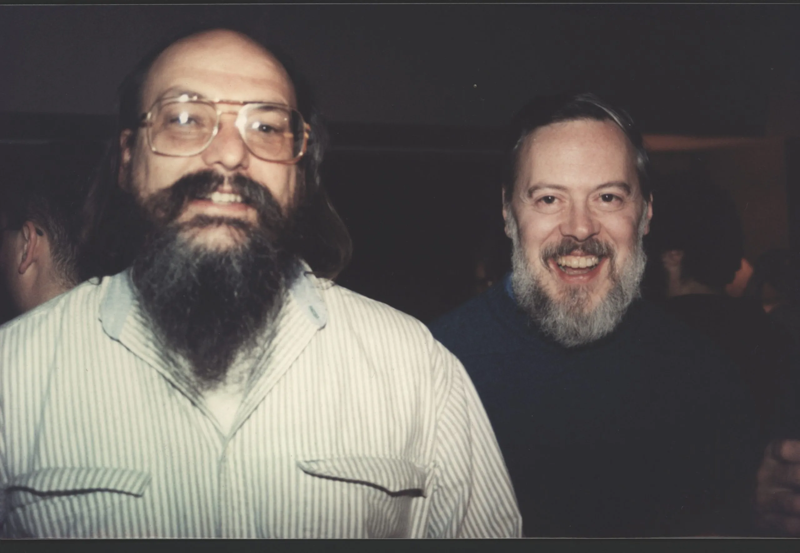

The History Of Linux

The history of Linux is deeply rooted in the development of UNIX, which was created by Ken Thompson and Dennis Ritchie at AT&T's Bell Labs in 1969. UNIX was a pioneering operating system that introduced key concepts like a hierarchical file system, multitasking, and portability.
Thompson and Ritchie's work laid the foundation for modern operating systems. Thompson developed the initial UNIX system on a PDP-7, while Ritchie created the C programming language, which allowed UNIX to be rewritten in a high-level language, enhancing its portability and adaptability.
UNIX's influence shaped the evolution of computing and inspired countless operating systems, including Linux. By the 1980s, UNIX was widely used in academia and industry, but its restrictive licensing and high costs limited its accessibility. This gap led to the creation of MINIX, a
UNIX-like operating system designed for educational purposes by Andrew S. Tanenbaum. While MINIX was valuable for teaching, its limitations frustrated Linus Torvalds, a computer science student at the University of Helsinki. Torvalds, inspired by Thompson and Ritchie's UNIX principles,
decided to develop his own operating system kernel. In 1991, Torvalds began his project on his Intel 80386 PC and announced it on a Usenet newsgroup on August 25, 1991. He described it as a hobby project and welcomed collaboration from others. Initially, he named his project "Freax,"
but the name was later changed to "Linux" by the FTP server administrator, combining "Linus" and "UNIX." The first public release of the Linux kernel, version 0.02, occurred in October 1991. Torvalds licensed Linux under the GNU General Public License (GPL) in 1992, ensuring that it
would remain free and open-source. Linux's development was heavily influenced by the GNU Project, launched by Richard Stallman in 1983. The GNU Project sought to create a free operating system, but it lacked a functioning kernel. Torvalds' Linux kernel, combined with GNU tools,
formed the complete GNU/Linux operating system. This collaboration exemplified the open-source philosophy championed by Stallman and built upon the groundwork laid by Thompson and Ritchie's UNIX. Throughout the 1990s, Linux evolved rapidly as developers worldwide contributed to its
growth. Distributions, or "distros," such as Slackware, Debian, and Red Hat emerged, making Linux accessible to various audiences. These distros packaged the kernel with tools and applications tailored for personal, educational, and enterprise use. Linux's versatility made it a popular
choice for servers, supercomputers, and embedded systems. Today, Linux powers a vast array of technologies, from smartphones to cloud computing platforms, embodying the open-source principles inspired by Thompson, Ritchie, and Stallman. The legacy of UNIX and the contributions of
Ken Thompson and Dennis Ritchie remain integral to Linux's success, showcasing the enduring impact of their revolutionary work on modern computing.
Linus Torvalds

Linus Torvalds is a Finnish-American software engineer best known as the creator of the Linux kernel, which serves as the foundation for the widely used Linux operating system. Born on December 28, 1969, in Helsinki, Finland, he comes from a family with a strong cultural and
academic background; his parents were both journalists, and his maternal grandfather was a noted statistician. Torvalds displayed an early aptitude for mathematics and technology, which led to his fascination with computers. He began programming on his grandfather's Commodore VIC-20
in the early 1980s, exploring its capabilities and writing assembly language programs. His interest deepened when he acquired a Sinclair QL, a machine he extensively modified, creating new software and rewriting parts of its operating system.
In 1988, Linus enrolled at the University of Helsinki to study computer science. During his studies, he encountered the MINIX operating system, a UNIX-like system used for educational purposes. Although he admired MINIX, he found its limitations frustrating and began developing his own
kernel as a personal project. On August 25, 1991, he announced his work on a Usenet newsgroup, describing it as a hobby project but inviting collaboration from others. This marked the beginning of Linux's open-source development model, where developers worldwide contributed to its rapid
evolution. The name "Linux" came about somewhat serendipitously. Torvalds initially named his creation "Freax," a mix of "free," "freak," and "UNIX." However, the administrator of the FTP server where Torvalds uploaded the code changed the name to "Linux," combining "Linus" and "UNIX."
The name stuck, and Linux quickly gained momentum. In October 1991, version 0.02 of the Linux kernel was publicly released, and by 1992, Torvalds had licensed it under the GNU General Public License (GPL), ensuring that it would remain free and open-source.
Linux's open-source nature encouraged widespread collaboration, leading to the development of distributions (distros) such as Slackware, Debian, and Red Hat in the early 1990s. These distros packaged the kernel with user-friendly tools, making Linux accessible to various audiences, from
developers to enterprises. Torvalds continued refining the kernel, overseeing contributions from thousands of programmers and ensuring its stability and scalability. In addition to creating Linux, Torvalds developed Git in 2005, a distributed version control system now essential in
software development. Git was designed to manage large-scale projects efficiently and has become a cornerstone of collaborative programming.
Throughout his career, Torvalds has received numerous accolades for his contributions to technology, including the Millennium Technology Prize in 2012 and the IEEE Computer Society Computer Pioneer Award. He remains an active participant in the Linux development community, prioritizing
technical excellence and pragmatic problem-solving. Today, Linux powers an extensive array of technologies, from web servers and supercomputers to smartphones and embedded systems. Torvalds's work has had a profound impact on the open-source software movement, fostering innovation,
collaboration, and accessibility across the globe. His legacy is defined by his technical achievements and his dedication to empowering users and developers worldwide. Click here to read more...